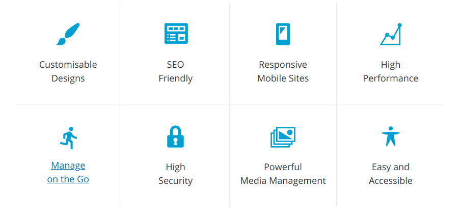

Electronic lab notebooks with Wordpress
Erick Martins Ratamero
Research Fellow
- These slides: http://tiny.cc/camduWP (redirects to https://erickmartins.github.io/Wordpress.html)
- Navigation: arrow keys left and right to navigate
- 'm' key to get to navigation menu
- Escape for slide overview
What is Wordpress?
an online, open source website creation tool written in PHP
What we'd like from an Electronic Lab Notebook (ELN), according to Steve:
- Easy-to-use. Allow adding pictures and notes easily.
- Versioning (ability to check edits and audit changes)
- Backup and data security
- Ability to export and go elsewhere if required
- Free or low cost
- Integration with existing lab systems if possible
- Open software, future development
- Clarity over who owns the software, who owns the data, and where the information is stored
- Can be deployed for the entire lab
Most solutions stumble on steps 4, 5 and 7
Self-hosted wiki would solve almost everything - but it fails right out of the gate on step 1
Wordpress is not the only solution that works, but it works! (and if it's good enough for a third of the internet, it's probably good enough for us)
Introduction to Wordpress
Chapter 1: the dashboard